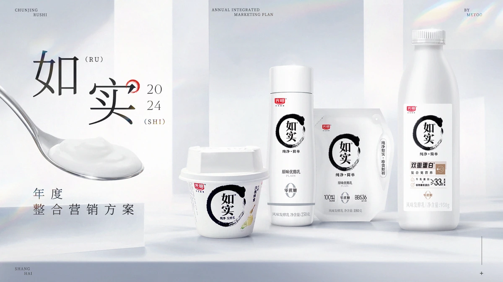
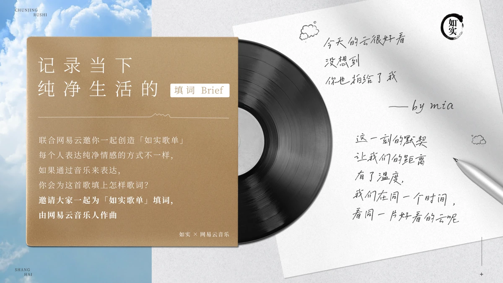
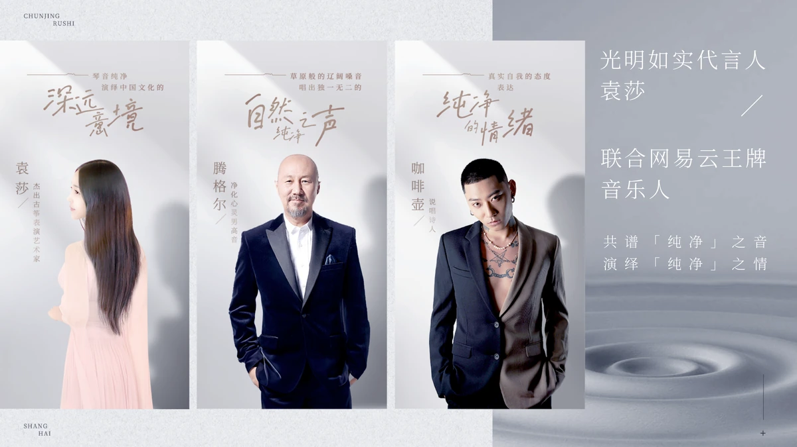
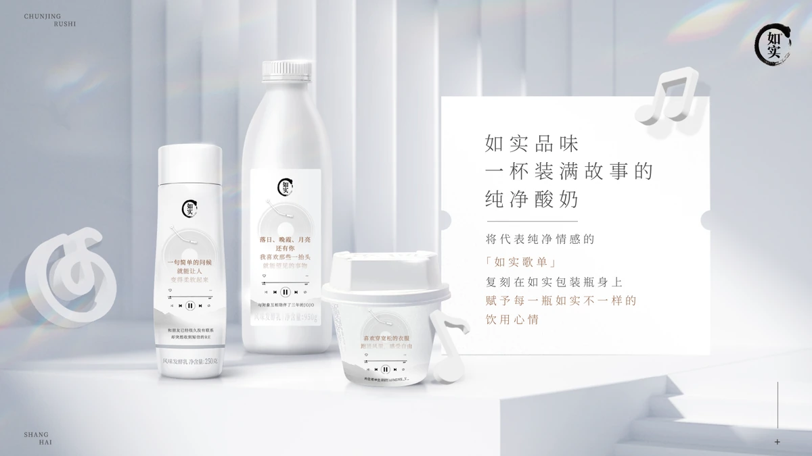

光明如实 2024 年度整合营销方案

- Brand
- 光明如实
- Project
- 光明如实 2024 年度整合营销 Campaign
- Role
- 视觉海报设计、联名包装设计、方案内容制作
- Status
- ANNUAL IMC PLAN
项目概览
项目背景
在低温酸奶都强调配料表的竞争中，方案把“纯净”从产品成分延展到音乐与时尚生活方式，并用“源本纯净，品味如实”统一年度视觉。
主要交付物
基于年度大主张“源本纯净，品味如实”的全年整合营销策略与视觉定调。Q2“音”之源味联动网易云音乐及辰山音乐节，推出“纯净歌词杯”及线下听觉／味觉盛宴；Q4“尚”之源味以时尚态度跨界传递纯净生活品味。


